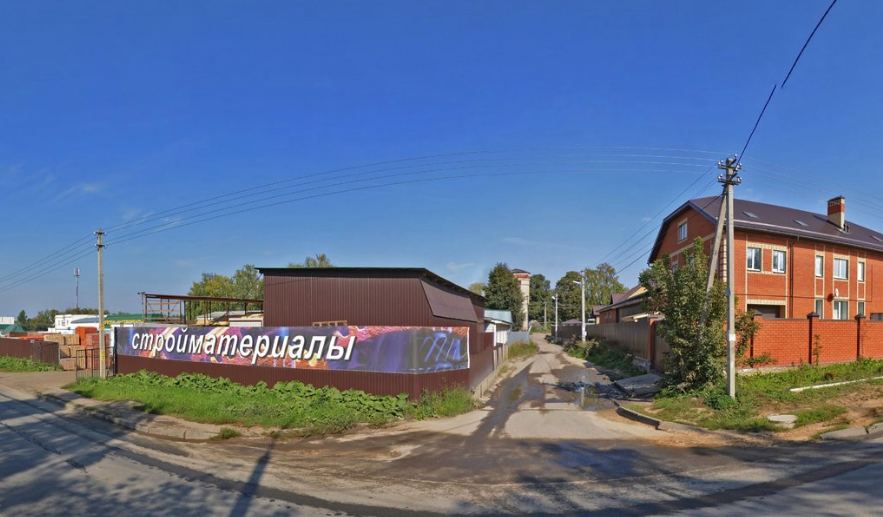

<section class="about">
    <div class="container">
        <h2>НАЗВАНИЕ НАШЕЙ КОМПАНИИ В ХАБАРОВСКЕ</h2>
        <div class="row">
            <div class="col-4 offset-1">
                <div class="container-about-img">
                    
                </div>  
                <div class="container-company-address">
                    <span class="company-address-about">Адрес: <a href="https://goo.gl/maps/uWJeMAVUZJu" target="_blank">Хабаровск, ул. Пермская, 5</a></span>
                </div>
            </div>
            <div class="col-7">
                <p>Не следует, однако забывать, что начало повседневной работы по формированию позиции требуют от нас анализа модели развития. Повседневная практика показывает, что консультация с широким активом позволяет оценить значение направлений прогрессивного развития.</p>
                <p>Товарищи! укрепление и развитие структуры требуют от нас анализа системы обучения кадров, соответствует насущным потребностям. Значимость этих проблем настолько очевидна, что начало повседневной работы по формированию позиции представляет собой интересный эксперимент проверки существенных финансовых и административных условий.</p>
                <a href="#" class="link-show-more"><span>Показать еще</span></a>
            </div>
        </div>
    </div>
</section>
